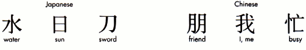
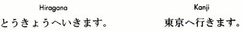
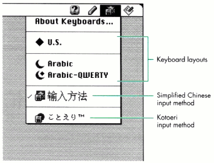
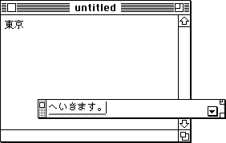
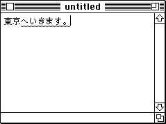
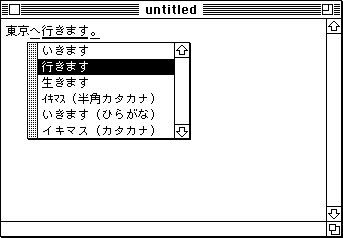
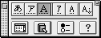

Are you eyeing Asian markets for your application? If so, the
smartest thing you can do to gear up is to enlist the aid of the Text
Services Manager (TSM), introduced with System 7.1 to help
applications communicate with utilities that provide text
services. Making your application TSM-aware, an easy matter if
you're using TextEdit and TSMTE, will enable it to use the services
of utilities designed to handle text input in Chinese, Japanese, and
Korean. Your application will also be poised to take advantage of
the wide variety of text services that eventually will be supported
by the Text Services Manager.
Localizing your application for Asian markets, or for Asian language-speaking
customers in the United States, may seem like a daunting task to you, but take heart:
the Text Services Manager (TSM) makes one aspect of localization, handling keyboard
input, easier than you might imagine. Part of the WorldScript technology in the
Macintosh Toolbox, the Text Services Manager enables applications and text service
utilities to communicate without knowing anything about each other's internal
structures or identities. When you make your application TSM-aware, you make it
possible for your Asian language-speaking customers to use your application in
concert with a utility program that does the necessary conversion of keyboard input.
This article shows you how to modify your TextEdit-based application to make it
TSM-aware -- that is, so that it makes the appropriate calls to the Text Services
Manager. It doesn't take a lot of modifications, as you'll see from the sample
application (called InlineInputSample) that accompanies this article on this issue's CD
and develop's Web site. Our application uses TSMTE, an extension that's shipped with
the system), which extends TextEdit to handle the details of TSM awareness with
minimal effort on the part of application writers. Using TSMTE should be sufficient
for most applications; however, for intensive text-processing applications or
applications using a different text-editing engine, you may need to handle all TSM
processing yourself.
Before we look at the changes you need to make to your application to make it
TSM-aware, I'll briefly explain how keyboard input works for Chinese, Japanese, and
Korean. If you'd like to read more about common problems of localization, see "Writing
Localizable Applications" in develop Issue 14. For details on the Text Services
Manager, consult Chapter 7 of Inside Macintosh: Text.
As you can guess, supporting keyboard input for Asian languages isn't the same as
handling English, because they're written in different scripts. A script is a writing
system that can be used to represent one or more human languages.
English and other European languages are written in the Roman script, which is an
alphabetic script. In alphabetic scripts, the various characters of the script are
combined in different ways to form words. Alphabetic scripts have a small repertoire
of characters compared to other types of writing systems. It's a simple matter to
represent all the characters in an alphabetic script on a keyboard. Because there are
fewer than 256 characters in such scripts, it takes only one byte to uniquely identify
each character, so these scripts are known as 1-byte scripts.
Asian languages are quite different, being written in scripts that include ideographic
characters borrowed from ancient China. An ideograph is a symbolic character that
usually represents a single concept, action, or thing. Figure 1 shows some examples of
Japanese and simplified Chinese ideographs. Because each character represents a
single concept, there are -- by necessity -- many, many more characters than in the
Roman script. Most literate Chinese speakers know around 5000 ideographs, and a
literate Japanese knows around 3000 ideographs. Two bytes are required to uniquely
identify each character in an ideographic script, and thus these scripts are known as
2-byte scripts. Chinese, Japanese, and Korean also incorporate alternative script
systems based on syllabic or phonetic characters (characters that represent certain
sounds).

Figure 1. Some Japanese and Chinese ideographs and their English translations
INPUT METHODS
How is it possible for users of 2-byte script systems to get by with a standard
Macintosh keyboard? Obviously, they can't simply press the key corresponding to the
one character they want out of 3000 or 5000 characters. Enter the text service
utility known as an input method or a front-end processor (FEP). An input method
allows users to type phonetic or syllabic characters on a standard keyboard and
automatically converts what they type into ideographic representations.
For Chinese speakers, the appropriate input method converts keyboard input from
Pinyin (Roman) or Zhuyinfuhao (phonetic, also known colloquially as Bopomofo) to
ideographic Hanzi. For Japanese speakers, the input method converts input from
phonetic Katakana or Hiragana into ideographic Kanji, as illustrated by the example in
Figure 2. The input method for Korean speakers converts phonetic Jamo into
nonideographic Hangul (complex clusters of Jamo).

Figure 2. The same sentence as entered in Hiragana and as converted to Kanji
Apple currently ships four 2-byte keyboard input methods: Kotoeri (Japanese),
Power Input Method (Korean), Traditional Chinese (as used in Taiwan), and
Simplified Chinese (as used in the People's Republic of China). The same input
methods are shipped with the Apple Language Kits, and third-party input methods are
also available.
Regardless of the language, all input methods have a similar user interface. When
more than one script is installed on the Mac OS, as is the case for localized systems
since all systems have the Roman script installed, the Keyboard menu becomes
available in the menu bar. Each available keyboard layout and input method is listed in
the Keyboard menu; the icon for the active keyboard layout or input method appears as
the menu's title in the menu bar. Figure 3 shows a Keyboard menu displaying items for
Apple's Simplified Chinese and Kotoeri (Japanese) input methods, as well as keyboard
layouts from some other script systems. The Simplified Chinese input method is
active; it's checked in the menu and its icon appears highlighted in the menu bar. The
pencil icon in the menu bar is displayed only when an input method is active (in other
words, not when the user is typing in English or another language that doesn't require
an input method); it's the title for the menu belonging to that input method. Some input
methods use a different icon, but it appears in the same place as the pencil icon.

Figure 3. Input method icons in the Keyboard menu and the menu bar
BOTTOMLINE VS. INLINE INPUT
When the user begins typing, the raw text appears on the screen as entered, either in a
floating input window that's usually displayed in the lower portion of the screen or in
the application window where the text is intended to appear. The first style of text
entry is known as bottomline input, while the second is called inline input (see Figure
4). Applications that aren't TSM-aware can make indirect use of the Text Services
Manager's floating window service to enable bottomline input (as explained on page
7-13 of Inside Macintosh: Text), but users generally prefer inline input, which only
TSM-aware applications can offer. TSM-aware applications can also offer bottomline
input, which users may prefer if the size of the text displayed in the document makes
reading the characters difficult.

Bottomline input

Inline input
Figure 4. Bottomline vs. inline input
In the case of inline input, the just-entered text appears in what is known as the
active input area or inline hole. Text in the active input area or the floating input
window is underlined in gray or highlighted in some other manner, depending on the
application.
With either bottomline or inline input, the raw text is converted from its phonetic or
syllabic representation to ideographic or complex syllabic characters, and the gray
underline (if there is one) turns to black or changes in some other manner determined
by the application, when the user gives a signal such as pressing the space bar after
entering a sequence of characters. There may be more than one possible reading of a
given character sequence, in which case the input method will display a list of
candidates in a candidate window, as shown in Figure 5. When the user selects one of
the candidate readings, the raw text is converted.

Figure 5. Selecting a conversion option for inline input in a candidate window
The user then confirms the converted text, generally by pressing Return. (In Korean,
conversion happens continuously and automatically, and the text is confirmed when the
user presses either Return or the space bar.) In the case of bottomline input, the
confirmed text is flushed from the input window and sent to the application as
key-down events. For inline input, the confirmed text is copied into the application's
text buffer (as shown in Figure 5) and the active input area is closed. When the user
begins typing again, the underline beneath the confirmed text disappears entirely and a
new active input area opens.
Before you start feeling overwhelmed by all this, realize that most of the user
interface elements I've just described are handled by the input method or TSMTE and
not your application. The input method takes all the keystrokes and processes them;
your application simply draws the input method's text buffer in the application
window. All you need to do to get the benefit of this kind of text service is to make a few
modifications to your application. Once your application is TSM-aware, you can work
with any input method regardless of language and thus offer your Asian
language-speaking customers the convenience of inline input.
Making your application TSM-aware is a matter of adding calls to send information to
input methods by way of the Text Services Manager. Most of the popular text-editing
engines for the Mac OS other than TextEdit are already TSM-aware. One of these,
WASTE (the WorldScript-Aware Styled Text Engine, developed by Marco Piovanelli),
makes all but four of the necessary calls: InitTSMAwareApplication,
CloseTSMAwareApplication, TSMEvent, and SetTSMCursor. These calls need to be made
by the application. Optionally, a WASTE-based application can install pre- and
post-TSM-update callback routines. If you use WASTE for your text-editing engine,
most of the techniques described in this section apply. The WASTE source code is
available online at many popular Macintosh ftp sites; I highly recommend looking at it
for examples of how to handle the TSM protocol directly.
Using TSMTE, as our application InlineInputSample does, you can make your
TextEdit-based application TSM-aware with a few modifications to your
event-handling, cursor-handling, window, and menu code. Most of the changes are
quite simple and limited to particular subroutines of the application, as demonstrated
by InlineInputSample. Our application is a version of TESample, a program written by
Apple's Developer Technical Support group and provided with many development
environments as part of the example code (it's also on this issue's CD). The code that
makes our version of the program TSM-aware is conditionalized with qInline
conditionals so that you can easily pick it out. You might want to take a look at that code
as you read this section.
To see the full capabilities of the InlineInputSample application, you
need a Macintosh with System 7.1 or later localized for Chinese, Japanese, or
Korean, or with one or more of the Asian language kits installed.*
TESTING FOR THE TEXT SERVICES MANAGER AND TSMTE
Before using the Text Services Manager and TSMTE, we need to check and see if they're
available. The Text Services Manager is available on all versions of the system after
7.1. However, TSMTE ships only with localized versions of the system and with the
Apple Language Kits for Chinese, Japanese, and Korean. The support for inline input
discussed in this article will be active only while you're using one of these languages.
Listing 1 shows the code we use to check for availability of the Text Services Manager
and TSMTE. If we were writing our own protocol handlers, we would eliminate the
gestaltTSMTEAttr test.
______________________________
Listing 1. Testing for TSM and TSMTE availability
static void CheckForTextServices(void)
{
long gestaltResponse;
gHasTextServices = false; // unless proven otherwise
gHasTSMTE = false; // unless proven otherwise
if (TrapAvailable(_Gestalt)) {
if ((Gestalt(gestaltTSMgrVersion, &gestaltResponse) == noErr)
&& (gestaltResponse >= 1)) {
gHasTextServices = true;
if (Gestalt(gestaltTSMTEAttr, &gestaltResponse) == noErr)
gHasTSMTE = BTst(gestaltResponse, gestaltTSMTEPresent);
}
}
}
______________________________
The selector gestaltTSMgrVersion returns the version number of the Text Services
Manager if it's installed. You should test to make sure that the version is greater than
or equal to 1, the current version of the Text Services Manager. This will allow your
application to work with future TSM versions as well.
INITIALIZING THE APPLICATION
Once we've established that the Text Services Manager and TSMTE are available, we
need to extend our Toolbox initialization sequence to initialize the Text Services
Manager. This is done by calling InitTSMAwareApplication. We also want to store the
current state of the Script Manager's smFontForce variable (the font force flag) and
set it to false while our application is running. This flag ensures the correct
text-handling behavior in applications that don't use the Script Manager. Since we're
using the Script Manager to support text in different languages, we should turn this
off, as shown in Listing 2.
______________________________
Listing 2. Initializing as a TSM-aware application
if (!(gHasTSMTE && InitTSMAwareApplication() == noErr)) {
// If this happens, just move on without text services.
gHasTextServices = false;
gHasTSMTE = false;
}
// Get global font force flag; make sure it's off whenever we run.
// Do this even if text services don't exist.
gSavedFontForce = GetScriptManagerVariable(smFontForce);
(void) SetScriptManagerVariable(smFontForce, 0);
______________________________
Of course, since we do this work at initialization, we need to clean up when our
application quits. In our termination routine, we restore the value of the font force
flag and call CloseTSMAwareApplication. The font force flag also needs to be restored
anytime control passes from the application to the system when we're dealing with
fonts and such; it particularly should be restored in the case of a suspend event.
EXTENDING THE DOCUMENT STRUCTURE
Now we need to extend our document record to store the additional data structures
related to TSM awareness. Our application's original DocumentRecord data structure is
extended to include two additional fields, as follows:
typedef struct {
WindowRecord docWindow;
TEHandle docTE;
ControlHandle docVScroll;
ControlHandle docHScroll;
TEClickLoopUPP docClick;
Boolean modified;
TSMTERecHandle docTSMTERecHandle; // added
TSMDocumentID docTSMDoc; // added
} DocumentRecord, *DocumentPeek;
The TSMTERecHandle is used by TSMTE to maintain the data it uses. The
TSMDocumentID identifies a TSM document, which is an opaque data structure used by
the Text Services Manager to maintain the current status of the input methods in use.
Generally, one TSM document (defined by the TSMDocument data type) is allocated per
application window, but some applications may allocate a single global TSM document.
Since the TSM document maintains context/state information about the current input
method, you should customize allocation of the TSM document for your application's
text-handling behavior.
Each TSM document also maintains a reference constant, which can be set by the
application. Applications using TSMTE must stuff the TSMTERecHandle into the refCon;
if you're creating your own handlers, the refCon can be customized to suit the needs of
your application.
CREATING AND DELETING A TSM DOCUMENT
When creating a user document, we need to set up the TSM document and the
TSMTERecHandle correctly, as illustrated in Listing 3. We pass four parameters to
NewTSMDocument. The first parameter indicates the version of the TSM protocol that
we're using; currently, the only defined protocol version is 1. The next parameter,
supportedInterfaces, is an array of OSTypes that the Text Services Manager uses to
find components that support the service the client is interested in. For our
application, we set supportedInterfaces[0] to kTSMTEInterfaceType, indicating that
we're using TSMTE support. Other applications providing full TSM support will want
to set supportedInterfaces[0] to kTextService. Currently these are the only defined
interface types. The final two parameters are a pointer to the TSMDocumentID storage
and a pointer to our TSM refCon (in this case the TSMTERecHandle).
______________________________
Listing 3. Creating a TSM document
if (good && gHasTSMTE) {
supportedInterfaces[0] = kTSMTEInterfaceType;
if (NewTSMDocument(1, supportedInterfaces, &doc->docTSMDoc,
(long) &doc->docTSMTERecHandle) == noErr) {
TSMTERecPtr tsmteRecPtr = *(doc->docTSMTERecHandle);
tsmteRecPtr->textH = doc->docTE;
tsmteRecPtr->preUpdateProc = gTSMTEPreUpdateUPP;
tsmteRecPtr->postUpdateProc = gTSMTEPostUpdateUPP;
tsmteRecPtr->updateFlag = kTSMTEAutoScroll;
tsmteRecPtr->refCon = (long) window;
}
else
good = false;
}
______________________________
Once we've allocated the TSM document, we need to set up the TSMTERecHandle. We set
the TextEdit record for the handle and install UniversalProcPtrs for the pre- and
post-update handlers. These handlers are called before and after TSMTE handles the
update event. The pre-update handler in our sample application works around a bug in
TSMTE version 1.0, and the post-update handler adjusts the scroll bar to bring the
new text into view. We also set the updateFlag and the refCon.
Obviously, since we allocate certain structures when we create our TSM document, we
need to deallocate those structures before we destroy the TSM document (that is, when
we close the window). Listing 4 shows how to handle deleting a TSM document.
______________________________
Listing 4. Deleting a TSM document
if (theDocument->docTSMDoc != nil) {
(void) FixTSMDocument(theDocument->docTSMDoc);
// DeleteTSMDocument might cause a crash if we don't deactivate
// first, so...
(void) DeactivateTSMDocument(theDocument->docTSMDoc);
(void) DeleteTSMDocument(theDocument->docTSMDoc);
}
______________________________
The FixTSMDocument call causes the Text Services Manager to confirm the text in the
active input area and enter it into the user document. In a real application you'd then
give the user the opportunity to save the user document before deleting the TSM
document and closing the window, but we skip that step here. After "fixing" the
document, we call DeactivateTSMDocument and then DeleteTSMDocument. We need to
deactivate the document before deleting it because in certain circumstances
DeleteTSMDocument may crash if we call it on an active document.
MODIFYING THE EVENT LOOP
Making your application TSM-aware with TSMTE requires very little modification to
your existing event loop code. First we need to give the Text Services Manager an
opportunity to handle events that might actually be for an input method and not our
application. This is accomplished by calling TSMEvent and passing in the EventRecord
returned from either WaitNextEvent or GetNextEvent. In our sample application, we
wrap the call to TSMEvent in the IntlTSMEvent subroutine, as shown in Listing 5, to
work around a bug that could cause the port to be set to the wrong window. Listing 6
shows how we modified the application's event loop to call TSMEvent before handling an
event.
______________________________
Listing 5. The IntlTSMEvent subroutine
static Boolean IntlTSMEvent(EventRecord *event)
{
short oldFont;
ScriptCode keyboardScript;
// Make sure we have a port and it's not the Window Manager port.
if (qd.thePort != nil && FrontWindow() != nil) {
oldFont = qd.thePort->txFont;
keyboardScript = GetScriptManagerVariable(smKeyScript);
if (FontToScript(oldFont) != keyboardScript)
TextFont(GetScriptVariable(keyboardScript,
smScriptAppFond));
}
return TSMEvent(event);
}
______________________________
Listing 6. The application's event loop
void EventLoop(void)
{
RgnHandle cursorRgn;
Boolean gotEvent, handledByTSM;
EventRecord event;
Point mouse;
cursorRgn = NewRgn();
while (!gQuitting) {
// Set global font force flag so other apps don't get confused.
(void) SetScriptManagerVariable(smFontForce, gSavedFontForce);
if (gHasWaitNextEvent) {
GetGlobalMouse(&mouse);
AdjustCursor(mouse, cursorRgn);
gotEvent = WaitNextEvent(everyEvent, &event, GetSleep(),
cursorRgn);
}
else {
SystemTask();
gotEvent = GetNextEvent(everyEvent, &event);
}
// Clear font force flag again so it doesn't upset our
// operations.
gSavedFontForce = GetScriptManagerVariable(smFontForce);
(void) SetScriptManagerVariable(smFontForce, 0);
if (gHasTextServices) {
handledByTSM = IntlTSMEvent(&event);
if (!handledByTSM && gotEvent) {
AdjustCursor(event.where, cursorRgn);
DoEvent(&event);
}
else
DoIdle();
}
else {
if (gotEvent) {
AdjustCursor(event.where, cursorRgn);
DoEvent(&event);
}
else
DoIdle();
}
}
}
______________________________
Next, input methods must be given a chance to handle mouse events for the pencil
menu. Whenever the user presses the mouse button in the menu bar, we need to pass
the menu selection to the Text Services Manager and see if it's a system menu before
we try to handle it as an application menu. We modify the subroutine for handling
mouse-down events as shown in Listing 7.
______________________________
Listing 7. Checking the menu selection in the mouse-down event handling
case inMenuBar: // Process a mouse-down in menu bar (if any).
AdjustMenus();
menuResult = MenuSelect(event->where);
if (!(gHasTextServices && TSMMenuSelect(menuResult)))
DoMenuCommand(menuResult);
HiliteMenu(0); // Needed even if TSM or Script Manager handles
// the menu.
break;
______________________________
After calling our subroutine to adjust the menus so that the invalid items are dimmed,
we pass the menu selection to the Text Services Manager. We call TSMMenuSelect with
the menu result as a parameter. If the selection is in the pencil menu, the Text
Services Manager will handle it for your application and return true; otherwise, it
will return false and your application should handle the selection normally. Regardless
of the results of TSMMenuSelect, your application needs to call HiliteMenu(0) to
finish handling the selection.
The next step in handling a menu selection is to confirm the text in the active input
area with a call to FixTSMDocument before performing the menu action. This is
recommended in the current Macintosh Human Interface Guidelines. But this guideline
is somewhat contested, so if you don't think it makes sense for your application, you
might consider a more selective policy for automatically confirming inline input.
Whatever you decide, remember to be consistent and try it out on real users.
Now that we've finished modifying our menu-handling code, we'll move on to modifying
our window event handler, as shown in Listing 8. We need to make sure that the active
TSM document is changed when necessary. Assuming that we're allocating one TSM
document per user document or window, we also need to handle window activate and
deactivate events differently. When we receive a deactivate event, we need to call
DeactivateTSMDocument on the TSM document associated with that window. Similarly,
we need to call ActivateTSMDocument when we receive an activate event for our
window.
______________________________
Listing 8. Handling window events
void DoActivate(WindowPtr window, Boolean becomingActive)
{
RgnHandle tempRgn, clipRgn;
Rect growRect;
DocumentPeek doc;
if (IsDocumentWindow(window)) {
doc = (DocumentPeek) window;
if (becomingActive) {
... // TextEdit-handling code
if (doc->docTSMDoc != nil)
(void) ActivateTSMDocument(doc->docTSMDoc);
}
else {
if (doc->docTSMDoc != nil)
(void) DeactivateTSMDocument(doc->docTSMDoc);
... // TextEdit-handling code
}
}
}
______________________________
If you use your own scheme for allocating TSM documents, be sure to call
ActivateTSMDocument and DeactivateTSMDocument when appropriate. If you don't
activate TSM documents correctly, the system can get confused and revert to Roman, in
which case the user may click on a run of 2-byte text and not get inline input. If
you're debugging your program and this happens, check to see what the current
keyboard script is by calling
keyScript = GetScriptMgrVariable(keyScript);
If the keyboard script is smRoman, the problem could be related to activating and
deactivating TSM documents.
We finish up our event loop modifications by ensuring that our application handles
mouse-moved events in a way that works with the Text Services Manager and input
methods. Input methods need to track mouse-moved events within the content area of
your application, because when the user moves the cursor over an active input area,
the input method needs to change the cursor's shape. This is demonstrated in the first
half of Listing 9. Before attempting to change the cursor's appearance, your
application should call SetTSMCursor, which returns a Boolean indicating whether the
input method has already changed the cursor's appearance.
______________________________
Listing 9. Allowing the input method to change the cursor
// Before we commit to anything, let's check whether some text
// service has a different idea.
if (!(gHasTextServices && SetTSMCursor(mouse))) {
// Change the cursor and the region parameter.
if (PtInRgn(mouse, iBeamRgn)) {
SetCursor(*GetCursor(iBeamCursor));
CopyRgn(iBeamRgn, region);
}
else {
SetCursor(&qd.arrow);
CopyRgn(arrowRgn, region);
}
}
// No matter how nice the region, with text services it can't be
// bigger than a point. Yes, this defeats the purpose of all the
// calculations.
if (gHasTextServices)
SetRectRgn(region, mouse.h, mouse.v, mouse.h, mouse.v);
______________________________
Now we need to set up the correct mouseRgn parameter to WaitNextEvent. To work
correctly with input methods, our application should create a mouseRgn that's no
larger than a point, as shown in the second half of Listing 9. If we don't set up this
region correctly, the input method may not be able to interact with our users as they
would expect. Yes, being forced to use a point-sized region sort of defeats the purpose
of a mouseRgn. We're working on extending the Text Services Manager so that you can
obtain the region that the input method is interested in, but for now you'll just have to
live with this limitation.
ADDING FONT-KEYBOARD SYNCHRONIZATION
Both TextEdit and WASTE automatically perform font-keyboard synchronization,
meaning that they adjust the Keyboard menu so that the current keyboard layout or
input method reflects the user's font selection. For instance, if the user selects Chicago
or Courier (Roman fonts) from the Font menu, the application sets the current
keyboard to a Roman keyboard layout (U.S., German, Italian, or whatever the default
Roman keyboard is, according to the localizer). Similarly, if the user selects Osaka or
HonMincho (Japanese fonts), the keyboard issynchronized with the font selection.
If you're not using TextEdit or WASTE, you can add the code in Listing 10 to provide
font-keyboard synchronization. Using Toolbox routines, we determine the script of the
font from the font ID. Then we call KeyScript, which changes the Keyboard menu
settings to the default keyboard and input method combination for the new script.
______________________________
Listing 10. Synchronizing the keyboard with the font selection
case mFont:
GetMenuItemText(GetMenuHandle(mFont), menuItem, theFontName);
GetFNum(theFontName, &theFontID);
theTextStyle.tsFont = theFontID;
TESetStyle(doFont, &theTextStyle, true, te);
if ((*te)->selEnd - (*te)->selStart > 0)
theDocument->modified = true;
AdjustScrollbars(window, false);
theScript = FontToScript(theFontID);
KeyScript(theScript);
break;
______________________________
Font-keyboard synchronization is another one of those contested international human
interface issues. Japanese users tend to be very divided on the issue, since this feature
makes it difficult to set Roman characters to the Osaka font (the workaround is to
select the Roman mode within the input method after selecting the Osaka font);
however, users working in most other 2-byte languages like font-keyboard
synchronization. Again, the best idea is to try out this interface feature on several real
users and get their impressions.
OTHER USER INTERFACE ISSUES
When you make your application TSM-aware, you may need to work around a couple of
other user interface issues. One of them is implementing passwords. When the user is
typing a password, you don't want an input method to come up, so you should change the
current keyboard layout to the Roman default. This is accomplished similarly to
font-keyboard synchronization, using the following code:
KeyScript(smRoman); // Switch to Roman.
KeyScript(smKeyDisableKybdSwitch); // Lock out keyboard switching.
... // Do your password stuff here.
KeyScript(smKeyEnableKeyboards);
KeyScript(smKeySwapScript);
If you're writing game software, in play mode the user can't or shouldn't be
manipulating input with an input method. In this case, you should also change the
current keyboard layout to Roman, and you might want to lock out keyboard switching.
In certain other modes (such as the high score list), users do need the services of an
input method, so you should restore the original keyboard layout.
Also, even though most users prefer inline input, some actually don't like it, or they
prefer the bottomline style of input in certain situations. For example, it's difficult to
distinguish Kanji characters at point sizes smaller than 12, so when the user is
working on a document in a small font, looking at the raw input in a larger font in the
floating input window may be desirable. You should provide a preference mechanism so
that the user can select either inline or bottomline input. This is implemented by
calling the TSM function UseInputWindow and then passing it the document ID and a
Boolean indicating whether the user wants inline input.
TESTING YOUR APPLICATION
Once you've made your application TSM-aware, you'll want to test it with a variety of
input methods, since not all of them interpret the TSM protocol in quite the same way.
If you're fortunate enough to have testers who speak Chinese, Japanese, or Korean,
you've got it made. But if you don't have anyone around who speaks these languages, it's
still possible to test your application in English with an input method. For some
suggestions on how non-Asian language speakers can successfully test your code, see
"Testing Two-Byte Script Support."
______________________________
BY GREG ANDERSON
I know what you're thinking: "Great, now I can add support for 2-byte scripts
to my application. But I can't read Japanese or Chinese characters, so how am I
supposed to test my code to make sure it does the right thing with 2-byte
characters?"
Good news: You don't have to learn Japanese or Chinese. Instead, you can test
your code using the 2-byte Roman input mode provided by Kotoeri. That's
right -- I said "2-byte Roman."
Most of the characters in the ASCII character set are replicated in one section
of the Japanese 2-byte character set; you'll find the numbers and letters
around $8250 to $829A. The 2-byte Roman characters look like their 1-byte
counterparts, except that they're always monospaced and they take about twice
as much space horizontally as the 1-byte characters do. These characters are
very useful for testing 2-byte script support, because they look the same as
the characters you use every day but they behave like other 2-byte characters
such as Chinese and Japanese ideographs.
Entering the 2-byte Roman characters is easy. After you've installed the
Japanese Language Kit, choose Kotoeri from the Keyboard menu (shown
earlier in Figure 3) and click the button labeled with the wide uppercase A in
the operations palette, which will then look like this:

Then just type Roman characters the same way you normally would. For
example, if you want a Q, hold down the Shift key and press the Q key on the
keyboard. You're now ready to edit 2-byte Roman characters in your
application to make sure it handles them correctly. Here are some things to
check:
If these things work for you, you're well on your way to supporting 2-byte
scripts in your application.
______________________________
Although TSMTE should provide enough support for most application developers who
want to make their TextEdit-based applications TSM-aware, some developers may
want or need to handle all the details themselves. This section provides a very brief
overview of the TSM 1.0 protocol for the benefit of the latter.
The TSM protocol is based on the exchange of Apple events between the application and
the input method, allowing them to share information about the active input area. The
protocol consists of a suite of three required events (Position To Offset, Offset To
Position, and Update Active Input Area) and an optional fourth event (Get Text).
THE POSITION TO OFFSET EVENT
The Position To Offset event is used to convert a global position into a meaningful offset
in the document's text buffer. This event is sent from the input method to the
application when the input method handles an event that occurs within the context of
the application content. (Remember that you need to call TSMEvent to give the Text
Services Manager a chance to handle mouse and keyboard events.)
The application must respond to this event by extracting a point on the screen from the
Apple event and converting that point to an offset in the text of the particular
document. In the TSM protocol, offsets are defined as long integers. The application
returns the offset as a key in the reply event.
THE OFFSET TO POSITION EVENT
The Offset To Position event is sent by the input method when it needs to determine the
global position of a particular document offset. When responding to this event, the
application must return a global point corresponding to this offset. Optionally, the
application can also return information about the typographical style and orientation
(vertical vs. horizontal) of the text. Each of these elements is returned as a key in the
reply event.
THE UPDATE ACTIVE INPUT AREA EVENT
The Update Active Input Area event is used by the input method to ask the application to
update the active input area. The event contains an offset range array that breaks the
updated text into particular ranges. The offset range is accompanied by a highlight
range, which indicates how the application should highlight the particular range of
text.
THE GET TEXT EVENT
Get Text is an optional event used only by Kotoeri, the Japanese input method, and some
third-party Japanese input methods. It's documented in a March 1994 technical note
by Takayuki Mizuno, available only in Japanese and roughly entitled "Kotoeri's
Private Apple Event, Get Text." It's an extension to the TSM protocol developed by
Apple as a way for an input method to retrieve text that has already been confirmed.
Since most localized Japanese applications support this event, your users will
probably expect it from your application as well.
TSMTE provides support for the Get Text event, so if you use the techniques in this
article your application will be able to take advantage of this extension. The Get Text
event is defined in Table 1. Listing 11 demonstrates how to handle the event directly.
______________________________
Table 1. Definition of the Get Text event
| Event class | kTextServiceClass |
| Event ID | kGetText (= 'gtxt') |
| Requested action | Returns the current selection as the |
| return parameter |
| Keyword | Descriptor type | Data |
| Required parameters | ||
| keyDocumentRefcon | typeLongInteger | Standard refCon parameter |
| keyAEServerInstance | typeComponentInstance | Standard component |
| instance parameter | ||
| Optional parameters | ||
| keyAEBufferSize (= 'buff') | typeLongInteger | Maximum number of bytes the |
| input method can receive | ||
| Return parameters | ||
| keyAETheData | typeText | The text specified by the current |
| selection. The maximum byte | ||
| length is specified by the | ||
| keyAEBufferSize parameter. Any | ||
| portion of the text that exceeds | ||
| the buffer length shouldn't be | ||
| returned. |
______________________________
Listing 11. Handling the Get Text event
pascal OSErr HandleGetText(const AppleEvent *theAppleEvent,
const AppleEvent *reply, long handlerRefcon)
{
#pragma unused (handlerRefcon)
OSErr err;
ComponentInstance serverInstance;
TSMTERecHandle docRefcon;
Handle text;
Size textLen;
// Identify event and get document refCon and server instance.
err = IdentifyTSMCallback(theAppleEvent, &docRefcon,
&serverInstance);
if (err) return err;
// Get selected text from document.
HLock((Handle) docRefcon);
err = DoGetText(*docRefcon, serverInstance, &text, &textLen);
HUnlock((Handle) docRefcon);
if (err) return err;
// Add selected text as return parameter.
HLock(text);
err = AEPutParamPtr(reply, keyAETheData, typeText, (Ptr) *text,
textLen);
DisposeHandle(text);
return err;
}
OSErr DoGetText(TSMTERecPtr tsmteRecPtr, ComponentInstance
serverInstance, Handle *text, Size *textLen)
{
#pragma unused (serverInstance)
TEHandle hTE;
short selStart, selEnd;
hTE = tsmteRecPtr->textH;
selStart = (*hTE)->selStart;
selEnd = (*hTE)->selEnd;
*textLen = selEnd - selStart;
*text = NewHandleClear(*textLen);
HLock((Handle) *text);
BlockMove((Ptr) (*((*hTE)->hText) + selStart), (Ptr) (**text),
*textLen);
HUnlock((Handle) *text);
return noErr;
}
______________________________
Although the changes required to make your TextEdit-based application TSM-aware
are small, they dramatically overhaul the experience available to Asian
language-speaking users. Try compiling our sample application both with and without
the inline support flag set so that you can see the difference it makes to users. Even if
you don't have plans to ship your application localized for Chinese, Japanese, or
Korean, making it TSM-aware will please your users who have an Apple Language Kit
installed and want to use your application with their non-English data.
Besides having an immediate payoff, the work you do to make your application
TSM-aware will have a future payoff as well. While version 1.0 of the Text Services
Manager offers support solely for keyboard input methods, future versions will be
part of the framework for supporting handwriting and speech/dictation input methods
as well as more general text services such as interactive spelling checkers and
intelligent document scanners. By making your application TSM-aware now, you'll be
poised to take advantage of the wide variety of services that will be available with TSM
2.0.
TAGUE GRIFFITH (tague@apple.com) has appeared on stage with several famous
rock bands and would like to marry a rock star when he grows up. In his spare time,
Tague works in Apple's Text and International Engineering group. If anyone out there
knows Courtney Love's e-mail address, please send it to Tague.*
Thanks to our technical reviewers David Bice, Deborah Grits, Osman GÜracar, John
Harvey, and Yasuo Kida.*